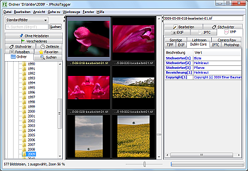

JPhotoTagger's Home Page
JPhotoTagger is a platform independent Photo Manager. You can manage and find fast your photos through keywords, descriptions and other so called metadata ("tags"). It speeds up adding or editing tags through automatic keyboard input completion and other features.
All tags will be written into XMP sidecar files and JPhotoTagger's database. The images are left untouched. JPhotoTagger is open to work together with other applications such as Adobe Photoshop Lightroom. JPhotoTagger automatically reads tags from new and changed sidecar files and updates it's database. You can tag your photos with e.g. Adobe Photoshop Lightroom and JPhotoTagger both even on different operating systems: JPhotoTagger runs on every system where Java is installed.

JPhotoTagger's main window. Click displays a
larger version.
{kind=link}
Languages
| Language | GUI | Online Help (F1) and PDF manual |
|---|---|---|
| Deutsch (German) | x | x |
| English | x |
Additional information
Author: Elmar Baumann
Status of this document: 2010-03-18